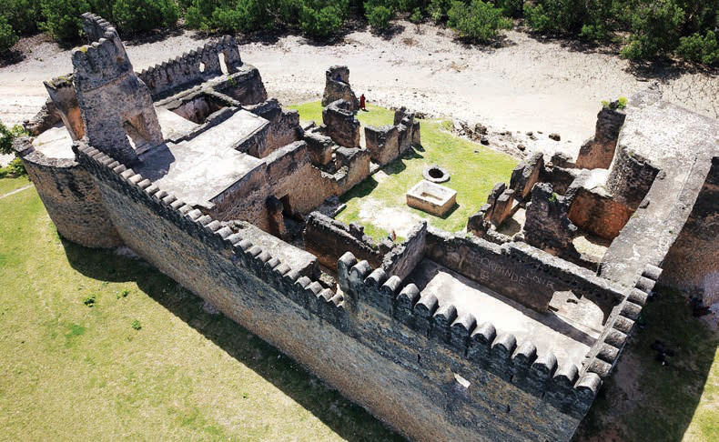
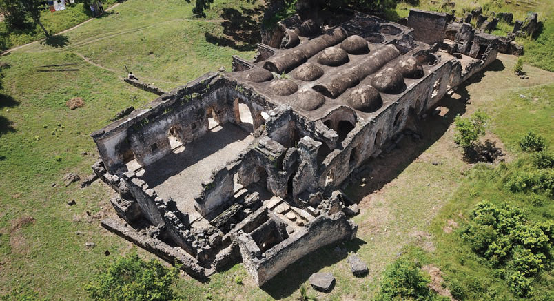

Kielelezo namba 8: Gofu la ngome ya gereza Kilwa, Lindi
Vilevile, kuna urithi wa magofu ya misikiti iliyotumiwa na wafanyabiashara hao kwa ajili ya ibada. Jamii hizi zilishika dini ya Kiislamu. Miongoni mwa misikiti hii ipo Kilwa Kisiwani, Lindi na Kaole Bagamoyo, mkoa wa Pwani (angalia Kielelezo namba 9).

Kielelezo namba 9: Gofu la msikiti mkuu Kilwa Kisiwani, Lindi